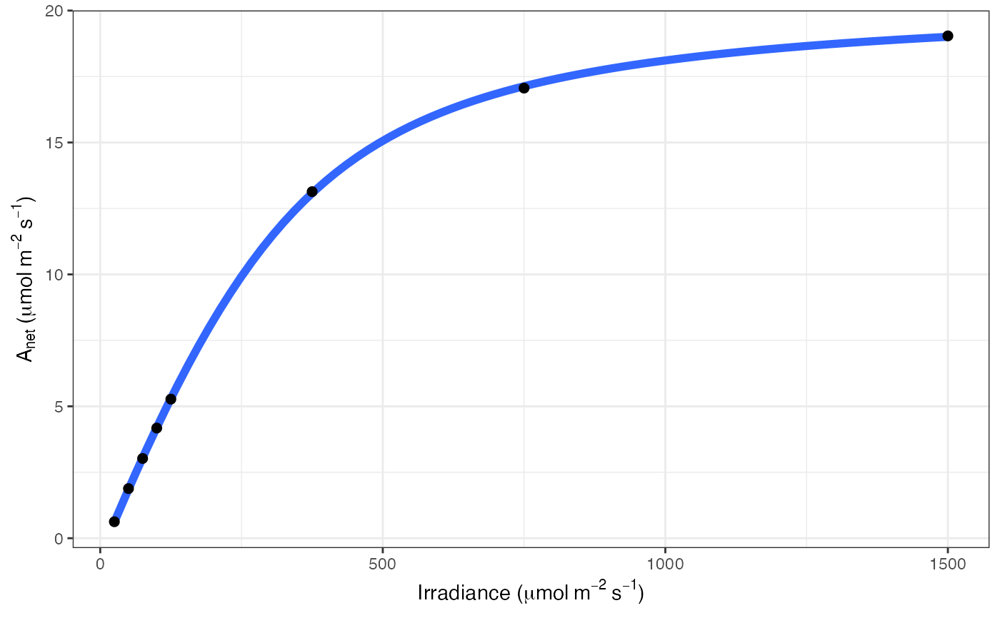
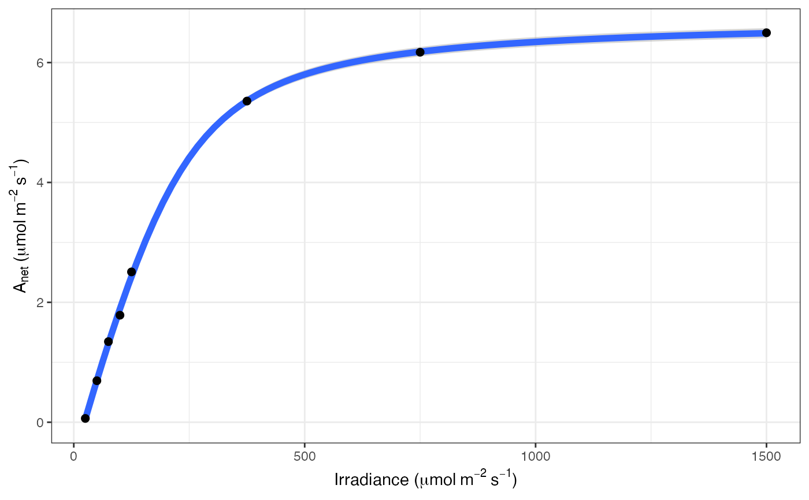

Fitting light responses of net CO2 assimilation
fit_aq_response( data, varnames = list(A_net = "A_net", PPFD = "PPFD"), usealpha_Q = FALSE, alpha_Q = 0.84, title = NULL )
| data | Dataframe containing CO2 assimilation light response |
|---|---|
| varnames | Variable names where varnames = list(A_net = "A_net", PPFD = "PPFD"). A_net is net CO2 assimilation in umol m-2 s-1, PPFD is incident irradiance. PPFD can be corrected for light absorbance by using useapha_Q and setting alpha_Q. |
| usealpha_Q | Correct light intensity for absorbance? Default is FALSE. |
| alpha_Q | Absorbance of incident light. Default value is 0.84. |
| title | Title for graph |
fit_aq_response fits the light response of net CO2 assimilation. Output is a dataframe containing light saturated net CO2 assimilation, quantum yield of CO2 assimilation (phi_J), curvature of the light response (theta_J), respiration (Rd), light compensation point (LCP), and residual sum of squares (resid_SS). Note that Rd fitted in this way is essentially the same as the Kok method, and represents a respiration value in the light that may not be accurate. Rd output should thus be interpreted more as a residual parameter to ensure an accurate fit of the light response parameters. Model originally from Marshall et al. 1980.
Marshall B, Biscoe P. 1980. A model for C3 leaves describing the dependence of net photosynthesis on irradiance. J Ex Bot 31:29-39
# \donttest{ # Read in your data # Note that this data is coming from data supplied by the package # hence the complicated argument in read.csv() # This dataset is a CO2 by light response curve for a single sunflower data <- read.csv(system.file("extdata", "A_Ci_Q_data_1.csv", package = "photosynthesis" )) # Fit many AQ curves # Set your grouping variable # Here we are grouping by CO2_s and individual data$C_s <- (round(data$CO2_s, digits = 0)) # For this example we need to round sequentially due to CO2_s setpoints data$C_s <- as.factor(round(data$C_s, digits = -1)) # To fit one AQ curve fit <- fit_aq_response(data[data$C_s == 600, ], varnames = list( A_net = "A", PPFD = "Qin" ) ) # Print model summary summary(fit[[1]])#> #> Formula: A_net ~ aq_response(k_sat, phi_J, Q_abs = data$Q_abs, theta_J) - #> Rd #> #> Parameters: #> Estimate Std. Error t value Pr(>|t|) #> k_sat 21.167200 0.158332 133.69 1.88e-08 *** #> phi_J.Q_abs 0.051907 0.001055 49.18 1.02e-06 *** #> theta_J 0.775484 0.014920 51.98 8.20e-07 *** #> Rd.(Intercept) 0.668495 0.065235 10.25 0.000511 *** #> --- #> Signif. codes: 0 ‘***’ 0.001 ‘**’ 0.01 ‘*’ 0.05 ‘.’ 0.1 ‘ ’ 1 #> #> Residual standard error: 0.05535 on 4 degrees of freedom #> #> Number of iterations to convergence: 5 #> Achieved convergence tolerance: 1.49e-08 #># Print fitted parameters fit[[2]]#> A_sat phi_J theta_J Rd LCP resid_SSs #> k_sat 21.1672 0.05190746 0.7754836 0.6684953 12.97289 0.01225491# Print graph fit[[3]]# Fit many curves fits <- fit_many( data = data, varnames = list( A_net = "A", PPFD = "Qin", group = "C_s" ), funct = fit_aq_response, group = "C_s" )#> | | | 0% | |======== | 11% | |================ | 22% | |======================= | 33% | |=============================== | 44% | |======================================= | 56% | |=============================================== | 67% | |====================================================== | 78% | |============================================================== | 89% | |======================================================================| 100%# Look at model summary for a given fit # First set of double parentheses selects an individual group value # Second set selects an element of the sublist summary(fits[[3]][[1]])#> #> Formula: A_net ~ aq_response(k_sat, phi_J, Q_abs = data$Q_abs, theta_J) - #> Rd #> #> Parameters: #> Estimate Std. Error t value Pr(>|t|) #> k_sat 7.347423 0.141931 51.768 8.33e-07 *** #> phi_J.Q_abs 0.027192 0.001511 17.994 5.61e-05 *** #> theta_J 0.837778 0.030608 27.371 1.06e-05 *** #> Rd.(Intercept) 0.615283 0.086994 7.073 0.00211 ** #> --- #> Signif. codes: 0 ‘***’ 0.001 ‘**’ 0.01 ‘*’ 0.05 ‘.’ 0.1 ‘ ’ 1 #> #> Residual standard error: 0.06799 on 4 degrees of freedom #> #> Number of iterations to convergence: 4 #> Achieved convergence tolerance: 1.49e-08 #># Print the parameters fits[[3]][[2]]#> A_sat phi_J theta_J Rd LCP resid_SSs #> k_sat 7.347423 0.02719153 0.8377781 0.6152826 22.96322 0.01849038# Print the graph fits[[3]][[3]]# Compile graphs into a list for plotting fits_graphs <- compile_data(fits, list_element = 3 ) # Compile parameters into dataframe for analysis fits_pars <- compile_data(fits, output_type = "dataframe", list_element = 2 ) # }